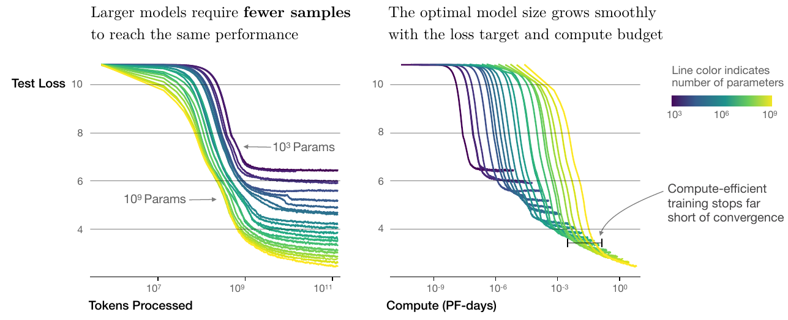

Mathematical Foundations of AI & ML
Unit 10: Attention & Transformers


RNNs unrolled through time
“Unrolling” repeats the RNN block for each step — a chain \(z_0 \to z_1 \to \cdots \to z_T\) with the same recurrent weight \(v\) reused every step.
- Backprop to an early weight multiplies the recurrent Jacobian once per step:
\[ \frac{\partial \mathcal{L}}{\partial \theta}\;\propto\;\prod_{t=1}^{T}\frac{\partial z_t}{\partial z_{t-1}}\;\sim\;v^{\,T} \]
- \(|v|<1 \;\Rightarrow\; v^{T}\to 0\) — vanishing gradient: early steps stop learning.
- \(|v|>1 \;\Rightarrow\; v^{T}\to \infty\) — exploding gradient.
- Exactly the product-of-Jacobians mechanism from Unit 6 — you have seen this failure mode before; it is not new.

Long Short-Term Memory (LSTM)
LSTM adds a separate “state” track \(C_t\) — a long-term memory highway:
- Forget gate: decides what fraction of the old state \(C_{t-1}\) to keep (\(f_t \in [0,1]\)).
- Input gate: proposes a new state \(\tilde C_t\) and a weight \(\omega\) for how much to add.
- Output gate: produces \(z_t\) by applying an activation to the new state.
- The state \(C_t\) flows with additive updates — gradients no longer vanish exponentially.

What does the attention matrix tell us?
- \(\mathrm{softmax}(S) \in \mathbb{R}^{n \times n}\): each row sums to 1.
- Entry \((i, j)\) is “how much position \(i\) pays attention to position \(j\).”
- Visualizing this matrix is one of the most useful interpretability tools in modern ML.
- For a ViT classifying a defect: the attention map shows which image patches the model used.

Multi-head attention — definition
For each head \(i = 1, \ldots, h\):
\[ \mathrm{head}_i = \mathrm{Attention}(Q W_i^Q, K W_i^K, V W_i^V), \]
with each head’s projection matrices independent. Concatenate and project:
\[ \mathrm{MultiHead}(Q, K, V) = \mathrm{Concat}(\mathrm{head}_1, \ldots, \mathrm{head}_h) W^O. \]

Sinusoidal positional encoding
For position \(\mathrm{pos}\) and embedding dimension \(i\):
\[ \mathrm{PE}(\mathrm{pos}, 2i) = \sin(\mathrm{pos} / 10000^{2i/d_{\text{model}}}), \] \[ \mathrm{PE}(\mathrm{pos}, 2i+1) = \cos(\mathrm{pos} / 10000^{2i/d_{\text{model}}}). \]
Add \(\mathrm{PE}\) to the token embeddings before the first attention layer: \(\tilde x_i = x_i + \mathrm{PE}(i, \cdot)\).
![Sinusoidal positional encoding matrix for 50 positions and 128 dimensions. Low dimensions oscillate rapidly (fine-grained position); high dimensions change slowly (coarse-grained). Each row is a unique positional fingerprint. (Generated locally.)]

Vision Transformer (ViT)
- Take an image. Split it into a grid of fixed-size patches (e.g., 16×16 pixels).
- Flatten each patch to a vector. Apply a learned linear projection to get a token embedding.
- The image is now a sequence of patch tokens. Add positional embeddings.
- Apply a standard transformer encoder. Use the output of a special [CLS] token as the image representation.
That’s it. ViT is “transformer on patches.” No convolutions, no spatial inductive bias.

ViT vs CNN — when does ViT win?
- ViT wins: when there is lots of pre-training data (think ImageNet-21k or JFT-300M).
- CNN wins: when training data is limited — locality is a useful prior that ViT has to learn from scratch.
- A common hybrid: pre-train ViT on a huge corpus, fine-tune on your small materials dataset. Best of both worlds.
For materials work: a pre-trained ViT (e.g., DINOv2) frozen + linear probe is often the strongest baseline. (Unit 9 told you this; now you know what’s inside the encoder.)

Why scaling won
- Transformers scale gracefully: doubling parameters and data gives predictable performance gains (scaling laws — Kaplan et al., Hoffmann et al.).
- Self-attention has no built-in inductive bias — which sounds bad — but means the model is flexible: with enough data, it learns the right priors.
- Hardware loves matmul; transformers are mostly matmul. GPUs and TPUs were designed around them (or vice versa).
- Bigger is also more sample-efficient: a larger model reaches a target loss in fewer tokens — and compute-optimal training deliberately stops short of convergence (the seed of the Chinchilla allocation result).
- Result: the same architecture, scaled up with more data and compute, kept getting better.

